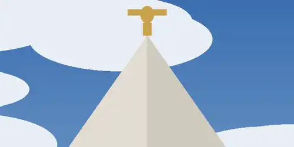

Responsive Images

Resize the browser window to see the image swap. Below 500px the tightly cropped spire loads, between 500px and 1000px a mid-range crop of the building loads, and at 1000px and wider the full grounds are shown.

Resize the browser window to see the image swap. Below 500px the tightly cropped spire loads, between 500px and 1000px a mid-range crop of the building loads, and at 1000px and wider the full grounds are shown.